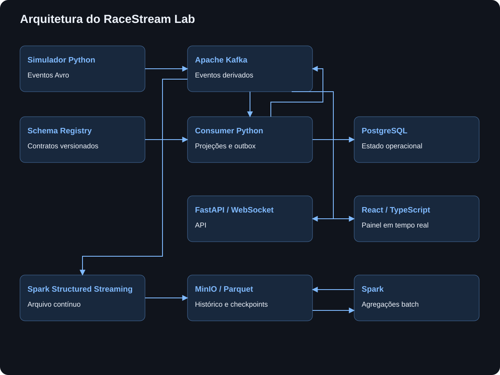

LABORATÓRIO
RaceStream Lab
Laboratório local de streaming e engenharia de dados, usando uma corrida simulada para estudar Kafka, contratos Avro, projeções em PostgreSQL e processamento com Spark.
Minha contribuição
Desenvolvo o RaceStream Lab como um ambiente local para estudar ferramentas de engenharia de dados. O projeto reúne um simulador em Python, eventos no Kafka, projeções no PostgreSQL, uma API em FastAPI e um painel em React, além de processamento e armazenamento histórico com Spark e MinIO.
A proposta é acompanhar o ciclo completo de um evento: como ele nasce, é transportado, validado, transforma o estado da aplicação e passa a fazer parte do histórico. A corrida oferece um cenário visual para experimentar essas etapas e entender as decisões de arquitetura na prática.
O problema
Estudar ferramentas isoladamente nem sempre mostra o que acontece quando elas precisam trabalhar juntas. Em um fluxo contínuo, surgem questões de ordenação, contratos, duplicidade, recuperação e consistência entre o que aparece na interface e o que foi persistido.
Uma corrida de vinte carros como fonte de eventos
A simulação produz aproximadamente um snapshot por segundo real para cada carro, além de eventos de passagem, volta, pit stop e incidente. Velocidade, posição, combustível e pneus tornam o fluxo fácil de observar, enquanto voltas e parciais permitem comparar os resultados do processamento.
Contratos e transporte com Kafka
Os eventos são serializados em Avro, com schemas versionados no Schema Registry e compatibilidade backward. O Kafka desacopla a produção dos diferentes consumidores e permite estudar ordenação por chave e replay dentro do período de retenção.
Arquitetura de dados
O consumer Python valida os eventos, trata duplicidades e atualiza as projeções operacionais no PostgreSQL. Recibos e outbox participam desse fluxo para relacionar o processamento dos eventos à persistência e à publicação de eventos derivados. O banco também guarda a configuração das corridas e seus resultados.
O mesmo barramento alimenta dois caminhos: o estado usado pelo painel e o arquivo analítico. Cada componente tem uma responsabilidade própria, permitindo observar como o transporte de eventos se relaciona com o estado transacional e o armazenamento histórico.

Um painel para observar o processamento
A API em FastAPI recebe comandos de configuração e controle por HTTP e acompanha eventos do Kafka para entregar atualizações por WebSocket. No navegador, o painel em React, TypeScript e SVG apresenta mapa da pista, classificação, telemetria, voltas e parciais. Assim, o comportamento do fluxo de dados ganha uma representação visível durante a corrida.
Histórico e processamento analítico
O Spark Structured Streaming consome os envelopes do Kafka e os arquiva em Parquet no MinIO, junto com metadados do transporte. Os checkpoints também ficam no armazenamento de objetos. Em uma etapa batch, o Spark calcula desempenho por carro e compara contagens e tempos de volta com as agregações do consumer online.
Resultados e aprendizados
O resultado é um laboratório executável localmente com Docker Compose, em que posso acompanhar eventos desde a simulação até o painel e o histórico analítico. O projeto cria condições para investigar evolução de contratos, deduplicação, replay e recuperação de projeções, além de comparar processamento online e batch usando o mesmo conjunto de eventos.
A simulação é um recurso de estudo: os parâmetros físicos são aproximados e não representam medições oficiais de carros ou pistas. O valor do projeto está em tornar as ferramentas e seus limites observáveis, com um domínio que ajuda a entender o efeito de cada decisão sobre os dados.